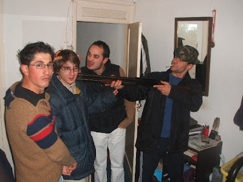

algures entre 2002 e 2005. sobrevivi a este ataque surpresa, perpetrado por velhos compinhchas. dois segundos após esta foto ter sido tirada claro que os tinha amordaçados, mãos atadas atrás das costas, a arma na minha posse e aquele cigarro no canto da minha boca. dois segundos e trinte e sete milésimos para ser mais específico.